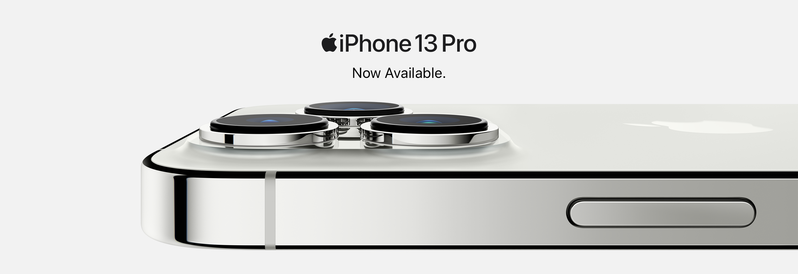

<nav class="navbar navbar-expand-lg navbar-dark bg-secondary">
    <div class="container">
        <a class="navbar-brand" href="#">
            
        </a>
        <button class="navbar-toggler d-lg-none" type="button" data-bs-toggle="collapse" data-bs-target="#collapsibleNavId" aria-controls="collapsibleNavId" aria-expanded="false" aria-label="Toggle navigation">
            <span class="navbar-toggler-icon"></span>
        </button>
        
    </div>
</nav>
